The Editor
Invoking the Editor
The editor may be invoked in several ways. From the session, you can use the system command )ED or the system function ⎕ED, specifying the names(s) of the object(s) to be edited. You can also type the name of the object and then press Shift+Enter (ED), click the Edit tool on the tool bar, or select Edit from the Action menu. If you invoke the editor when the cursor is positioned on the empty input line, with a suspended function in the State Indicator, the editor is invoked on the suspended function and the cursor is positioned on the line at which it is suspended. This is termed naked edit. These ways of invoking the editor apply only in the session window
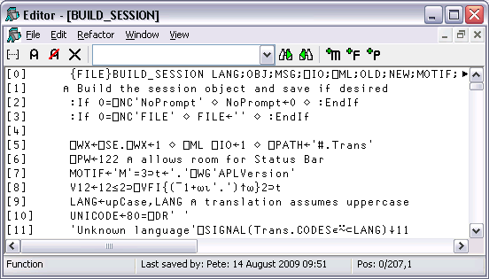
In addition, there is a general point-and-edit facility which works in edit and trace windows too. Simply position the input cursor over a name and double-click the left mouse button. Alternatively, you can press Shift+Enter or select Edit from the File menu. The name can appear in the Session, in an Edit window, or in a Trace window; the effect is the same. Note that, in the Session, typing a name and pressing Shift+Enter is actually a special case of point-and-edit. Note also that a naked edit can be invoked by double-clicking the left mouse button in the empty input line.
The type of a new object defaults to function/operator unless the object is shadowed, in which case it defaults to a variable (vector of character vectors). You can however specify the type of a new object explicitly using )ED or ⎕ED . For example, typing ")ED ∊LIST -MAT" in a CLEAR WS would create Edit windows for a vector of character vectors named LIST and a character matrix called MAT. See )ED or ⎕ED for details.
If the name is not already being edited, it is assigned a new edit window. If you edit a name which is already being edited, the system focuses on the existing edit window rather than opening a new one. Edit windows are displayed using the colour combination associated with the type of the object being edited.
Window Management (Standard)
Unless Classic Dyalog mode is selected (Options/Configure/Trace/Edit), the Editor is a Multiple Document Interface (MDI) window that may be a stand-alone window, or be docked in the Session window. Each of the objects being edited is displayed in a separate sub-window. Individual edit windows are managed using standard MDI facilities.
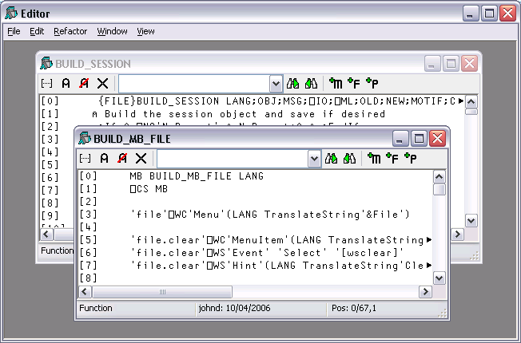
The initial size of an edit window is specified by the edit_rows and edit_cols parameters. The first edit window is positioned at 0 0. Subsequent ones are staggered according to the values of the edit_offset_y and edit_offset_x parameters.
By default, the Session has the Editor docked along the right edge of the Session window. When you edit a function, the Editor window automatically springs into view as illustrated overleaf.
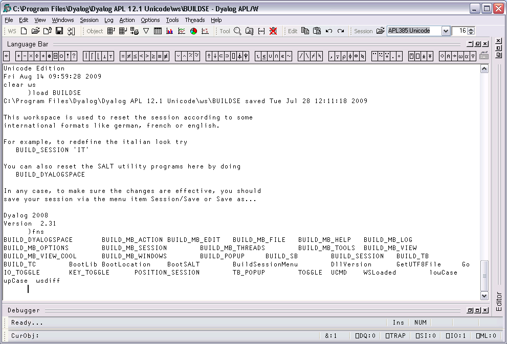
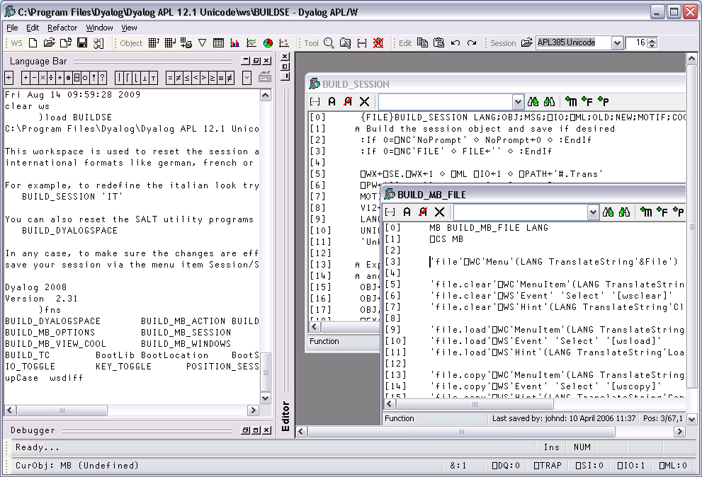
You can resize the Editor pane to view more or less of the Session itself, by dragging its title bar.
Using the buttons in the title bar, you can instantly maximise the Editor pane to allow you to concentrate on editing, or minimise it to reveal the entire Session. In either case, the restore button quickly restores the 2-pane layout.
The picture below shows the effect of maximising the Editor. The BUILD_SESSION edit window is itself maximised within the Editor too.
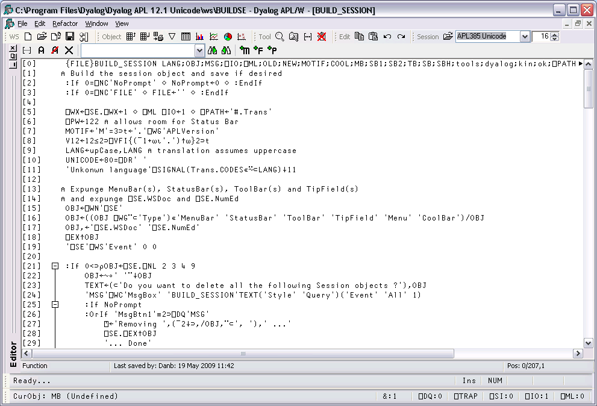
Note that when the Editor has the focus, the Editor menubar is displayed in place of the Session menubar.
Window Management (Classic Dyalog mode)
If Classic Dyalog mode is selected (Options/Configure/Trace/Edit) each Edit window is a top-level window created as a child of the Session window. This means that Edit windows always appear on top of the Session.
The first edit window is created at the position specified by the edit_first_y and edit_first_x parameters. The initial size of an edit window is specified by the edit_rows and edit_cols parameters.
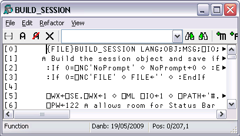
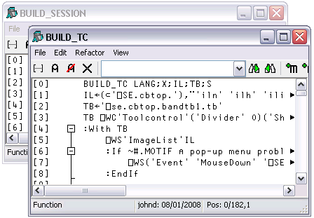
Subsequent ones are staggered according to the values of the edit_offset_y and edit_offset_x parameters.
Moving around an edit window
You can move around in the edit window using the scrollbar, the cursor keys, and the PgUp and PgDn keys. In addition, Ctrl+Home (UL) moves the cursor to the beginning of the top-line in the object and Ctrl+End moves the cursor to the end of the last line in the object. Home (LL) and End (RL) move the cursor to the beginning and end respectively of the line containing the cursor.
Closing an edit window
Closing an edit window from its System Menu has the same effect as choosing Exit from the File Menu; namely that it fixes the object in the workspace and then closes the edit window.
Minimising an edit window
Minimising an edit window causes it to be displayed as a Dyalog APL Edit icon, with the name of the object underneath. The edit window can be restored in the normal way, or by an attempt to re-edit the same name.
Editor ToolBar
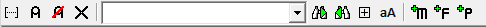
Toggle line numbers | Toggles Line numbers on/off. |
Comment selected text | Adds a comment to the beginning of the current line or all selected lines. |
Uncomment selected text | Removes a comment (if present) from the current line or all selected lines. |
Save changes and return | Saves changes and closes the current edit window. |
Search Box | Enter search text and click one of the following two buttons. |
Search for Next Match | Locates the next occurrence of the search text |
Search for Previous Match | Locates the previous occurrence of the search. |
Search hidden text | Determines whether or not the search examines collapsed blocks. |

Match case | Specifies whether or not the search is case-sensitive. |
Refactor text as method | Inserts a Method template for the selected name. |
Refactor text as field | Inserts a Field template for the selected name. |
Refactor text as property | Inserts a Property template for the selected name. |
The File Menu
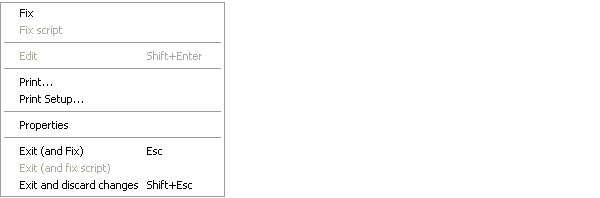
The File menu illustrated above is displayed when editing a simple object and provides the following options.
| Fix | Fixes the object in the workspace, but leaves the edit window open. Edit history is also preserved. If the data has changed and the confirm_fix parameter is set, you will be prompted to confirm. |
| Fix Script | (Disabled unless editing a script) |
| Edit | Opens an Edit window on the name under the mouse pointer. (Disabled when not). |
| Print | Prints the current contents of the edit window. |
| Print Setup | Displays the Print Configuration dialog box. |
| Properties | Displays the Object Properties dialog box for the current object. |
| Exit (and Fix) | Fixes the object in the workspace and closes the edit window. If the data has changed and the confirm_exit parameter is set, you will be prompted to confirm. |
| Exit (and fix script) | (Disabled unless editing a script) |
| Exit and discard changes | Closes the edit window, but does not fix the object in the workspace. If the data has changed and the confirm_abort parameter is set, you will be prompted to confirm. |
The File Menu (editing a script)
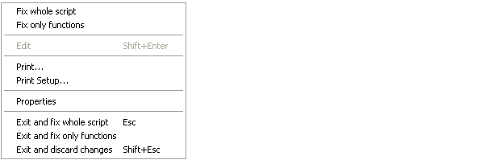
The File menu illustrated above is displayed when editing a script and provides the following different options from those shown on the preceding page.
| Fix whole script | Fixes the entire script |
| Fix only functions | Fixes only the functions in the script. |
| Exit and fix whole script | Fixes the entire script, and exits the Editor. |
| Exit and fix only functions | Fixes only the functions in the script and exits the Editor. |
Editing Scripts
Suppose that you have a Class that manages a list of items in a shared Field, so somewhere in the script would appear a line such as:-
:Field shared public List {gets} {zilde}You run your application for a bit, and List, which was initially empty, gets updated as new instances of the Class are created. You then edit the Class to add a new function, or fix a bug. In this instance, when you exit the editor you may not want List to be reset back to the empty vector although you do want the new version of the function(s) in the Class to be fixed.
Nevertheless whenever you edit the Class when it is not suspended, you probably always want the entire script to be re-fixed, and List re-initialised.
The options in the File menu shown above provide for these alternatives.
In addition, the Configuration dialog (See Fixing Scripts) allows you to define the behaviour of the keystrokes <EP> and <S1> for both the suspended case and the non-suspended case. This association will be displayed against the appropriate action according to the state of the script you are editing.
The Edit Menu
The Edit menu provides a means to execute those commands that are concerned with editing text. The Edit menu and the actions it provides are described below.
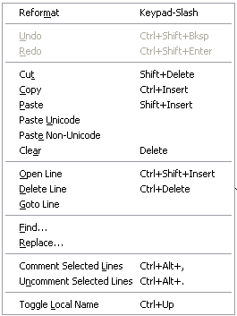
| Reformat | Reformats the function body in the edit window, indenting control structures as appropriate. |
| Undo | Undoes the last change made to the object. Repeated use of this command sequentially undoes each change made since the edit window was opened. |
| Redo | Re-applies the previous undone change. Repeated use of this command sequentially restores every undone change. |
| Cut | Copies the selected text to the clipboard and removes it from the object. |
| Copy | Copies the selected text to the clipboard. |
| Paste | Copies the text in the clipboard into the object at the current location of the input cursor. |
| Paste Unicode | Same as Paste, but gets the Unicode text from the clipboard and converts to ⎕AV |
| Paste Non-Unicode | Same as Paste, but gets the ANSI text from the clipboard and converts to ⎕AV. |
| Clear | Deletes the selection or the character under the cursor. Has no effect on the clipboard |
| Open Line | Inserts a blank line immediately below the current one. |
| Delete Line | Deletes the current line. |
| Goto Line | Prompts for a line number, then positions the cursor on that line. |
| Find | Displays the Find dialog box. |
| Replace | Displays the Replace dialog box. |
| Comment selected lines | Adds a comment symbol to the beginning of all selected lines. |
| UnComment selected lines | Removes a comment symbol from the beginning of all selected lines. |
| Toggle Local name | Adds or removes the name under the cursor to/from the function header line. |
The Find and Replace items are used to display the Find dialog box and the Find/Replace dialog box respectively. These boxes are used to perform search and replace operations and are described later in this Chapter.
Once displayed, each of the two dialog boxes remains on the screen until it is either closed or replaced by the other. This is convenient if the same operations are to be performed over and over again, and/or in several windows. Find and Find/Replace operations are effective in the window that previously had the focus.
The Refactor Menu
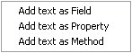
The Refactor menu illustrated above applies only when editing a Class and provides the following options. In each case, the user must highlight a name in the Edit window, and then select one of these options to insert the appropriate template for that name into the body of the Class.
| Add text as Field | Inserts a Field template for the selected name. |
| Add text as Property | Inserts a Property template for the selected name. |
| Add text as Method | Inserts a Method template for the selected text name. |
The View Menu
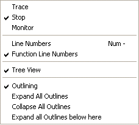
The View menu, illustrated above, provides the following actions.
| Trace | Displays a column to the left of the function that displays ⎕TRACE settings |
| Stop | Displays a column to the left of the function that displays ⎕STOP settings |
| Monitor | Displays a column to the left of the function that displays ⎕MONITOR settings |
| Line Numbers | Toggles the display of line numbers on/off. |
| Function Line Numbers | Toggles the display of line numbers on individual functions on/off. This option is only enabled when editing a Class, Namespace script or Interface. |
| Tree View | Toggles the display of the treeview in the left-hand pane. |
| Outlining | Turns outlining on and off. |
| Expand All Outlines | Expands all outlines. |
| Collapse All Outlines | Collapses all outlines |
| Expand all Outlines below here | Expands all outlines below the level of the current line. |
Function Line Numbers
The Function Line Numbers option in the Editor menu provides an additional level of line-numbering. If selected, line numbers are displayed independently on each individual function (or operator) in the Class. This option is only enabled when you are editing a Class, Namespace script or Interface, and is disabled for all other types of object.
Note that function line-numbering and general line-numbering are independent options and it is possible to have the entire Class numbered (from [0] to the number of lines in the Class) in addition to having line-numbering on each individual function.
The Window Menu
The Window menu provides a means to control the display of the various edit windows. The Window menu and the actions it provides are described below.
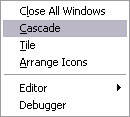
| Close All Windows | Closes all the edit windows. If Confirm on Edit Window Closed is checked, you will be prompted to confirm for any objects that you have changed. |
| Cascade | Arranges the edit windows in overlapping fashion. |
| Tile | Arranges the edit windows in a tiling fashion. |
| Arrange Icons | Arranges any minimised edit windows. |
| Editor | Allows you to Select the edit window corresponding to the named object. |
Using the Editor
Creating a New Function
Type the name of your function and invoke the editor. To do this you may press Shift+Enter, or select Edit from the Action menu, or double-click the left button on your mouse, or click the Edit tool in the tool bar. A new window will appear on the screen with the name you have chosen displayed in the top border. The name is also inserted in the function header and the cursor positioned to the right. The new window is automatically given the input focus.
Line-Numbers on/off
Try changing the line numbers setting by clicking on the Line Numbers option in the Options menu. Note that line-numbering on/off is effective for all edit windows.
Adding Lines
If the keyboard is in Insert mode, pressing Enter at the end of a line opens you a new blank line under the current one and positions the cursor there ready for input. You can also open a new blank line by pressing Ctrl+Shift+Insert (OP).
If the cursor is at the end of the last line in the function, pressing Enter adds another line even if the keyboard is in Replace mode.
Indenting Text
Dyalog APL allows you to insert leading spaces in lines of a function and (unless the AutoFormat parameter is set) preserves these spaces between editing sessions. Embedded spaces are however discarded. You can enter spaces using the space bar or the Tab key. Pressing Tab inserts spaces up to the next tab stop corresponding to the value of the TabStops parameter. If the AutoIndent parameter is set, new lines are automatically indented the same amount as the preceding line.
Reformatting
The RD command (which by default is mapped to Keypad-Slash) reformats a function according to your AutoFormat and TabStops settings.
Deleting Lines
To delete a block of lines, select them by dragging the mouse or using the keyboard and then press Delete or select Clear from the Edit menu. A quick way to delete the current line without selecting it first is to press Ctrl+Delete (DK) or select Delete Line from the Edit menu.
Copying Lines
Select the lines you wish to copy by dragging the mouse or using the keyboard. Then press Ctrl+Insert or select Copy from the Edit menu. This action copies the selection to the clipboard. Now position the input cursor where you wish to make the copy and press Shift+Insert, or select Paste from the Edit menu. You can also use this method to duplicate a ragged block of text.
To copy text using drag-and-drop editing:
- Select the text you want to move.
- Hold down the Ctrl key, point to the selected text and then press and hold down the left mouse button. When the drag-and-drop pointer appears, drag the cursor to a new location.
- Release the mouse button to drop the text into place.
Moving Lines
Select the lines you wish to copy by dragging the mouse or using the keyboard. Then press Shift+Delete or select Cut from the Edit menu. This action copies the selection to the clipboard and removes it. Now position the input cursor at the new location and press Shift+Insert, or select Paste from the Edit menu. You can also use this method to move a ragged block of text.
To move text using drag-and-drop editing:
- Select the text you want to move.
- Point to the selected text and then press and hold down the left mouse button. When the drag-and-drop pointer appears, drag the cursor to a new location.
- Release the mouse button to drop the text into place.
Joining and Splitting Lines
To join a line to the previous one: select Insert mode; position the cursor on the first character in the line; press Bksp.
To split a line: select Insert mode; position the cursor at the place you want it split; press Return.
Toggling Localisation
The TL command (which by default is mapped to Ctrl+Up) toggles the localisation of the name under the cursor. If the name is currently global, pressing Ctrl+Up causes the name to be added to the list of locals in the function header. If the name is already localised, pressing Ctrl+Alt+l removes it from the header.
Outlining
When you are editing a function, outlining identifies the blocks of code within control structures, and allows you to collapse and expand these blocks so that you can focus your attention on particular parts of the code
The picture below shows the result of opening the function ⎕SE.cbtop.TB_POPUP.
)ed ⎕SE.cbtop.TB_POPUP
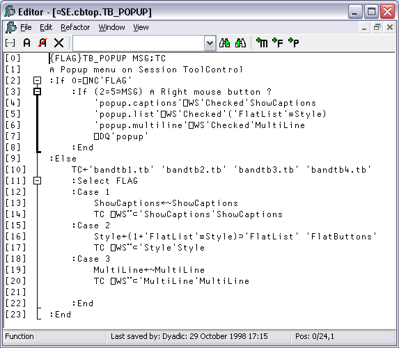
Notice that the various control structure blocks are delineated by a treeview diagram.
- When you hover the mouse pointer over one of the boxes that mark the start of a block , the line marking the extent of that block becomes highlighted, as shown above.
- If you click on a box, the corresponding section collapses, so that only the first line of the block is displayed, as shown below.
- If you click on a box, the corresponding section is expanded.
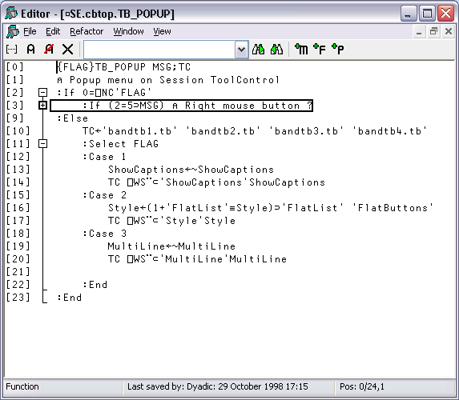
Sections
Functions and scripted objects (classes, namespaces etc.) can be subdivided into Sections with :Section and :EndSection statements. Both statements may be followed by an optional and arbitrary name or description. The purpose is to split the function up into sections that you can open and close in the Editor, thereby aiding readability and code management. Sections have no effect on the execution of the code, but must follow the nesting rules of other control structures.
The following picture illustrates the use of sections in a function called DumpWindow. The function is divided into 5 sections named Comments, Init, NAs, MakeBitmap and CopyToClipBoard.
The first picture shows the function with all sections closed.
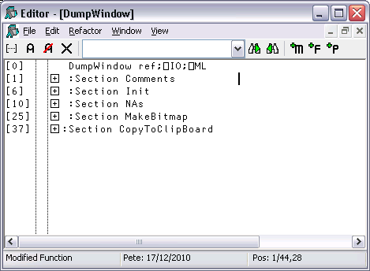
The next picture shows the effect of opening the Comments section. Notice how this is delineated by the statements:
:Section Comments
...
:EndSection Comments
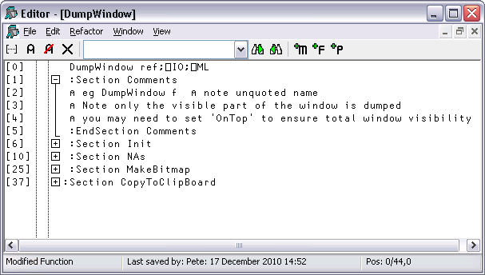
And with the Init section opened too:
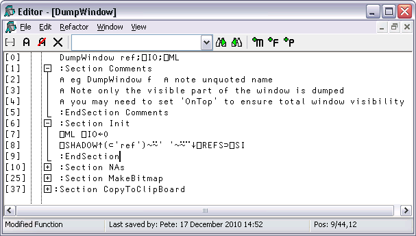
Finally, with all the sections opened:

Editing Classes
The picture below shows the result of opening the ComponentFile class. Notice how each function is delineated separately and that each function is individually line-numbered.
)ed ComponentFile
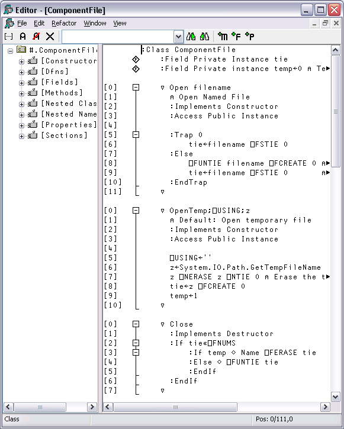
The outlining feature really comes into its own when editing classes because you can collapse and expand whole functions. The picture below shows the effect of collapsing all but the Append method.
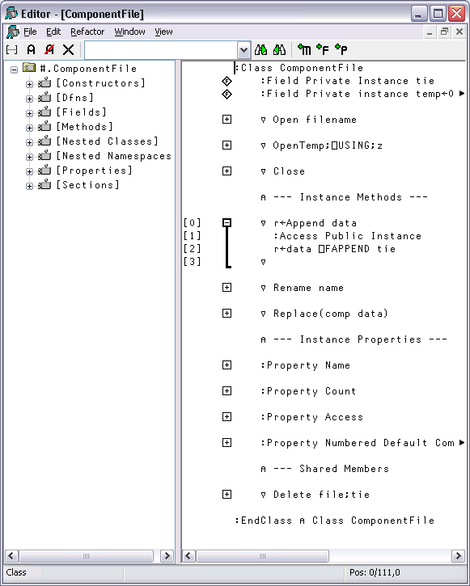
When you edit a class, a separate treeview is optionally displayed in the left pane to make it easy to navigate within the class. When you click on a name in the treeview, the editor automatically scrolls the appropriate section into view (if necessary) and positions the edit cursor at its start. The picture below illustrates the result of opening the [Methods] section and then clicking on Rename.

Sections within Scripts
Scripts can also be subdivided into Sections using :Section and :EndSection statements. As with single functions, the purpose is only to split the script up into sections that you can open and close in the Editor. Sections have no effect on the execution of the code.
The following picture illustrates a Class named actuarial which, for editing purposes, has been sub-divided into five separate Sections named Main, MenuHandlers, Validation, Utilities and OldCode. In this picture, all the Sections are closed.
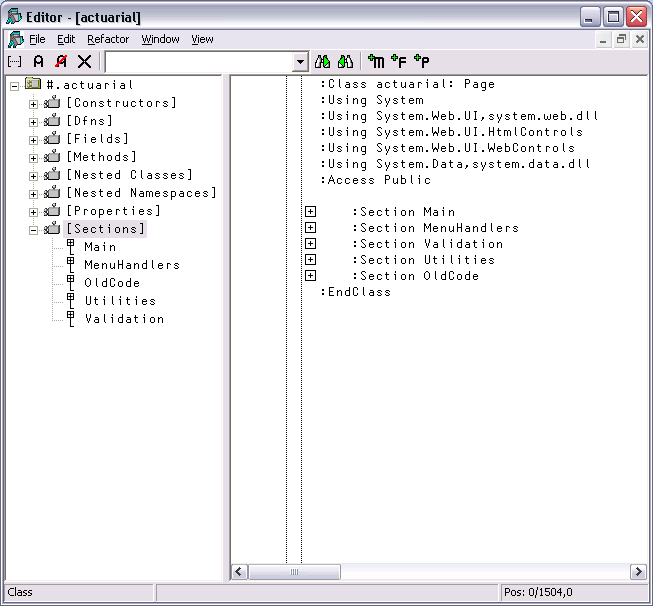
The next picture shows the effect of opening just the Main section.
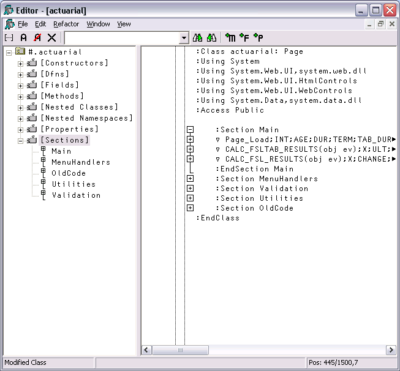
Notice that this section is delimited by the two statements:
:Section Main
...
:EndSection Main
In this picture the 3 functions within the Main section are temporarily closed.
Similarly, the section called Validation is delimited by:
:Section Validation
...
:EndSection Validation
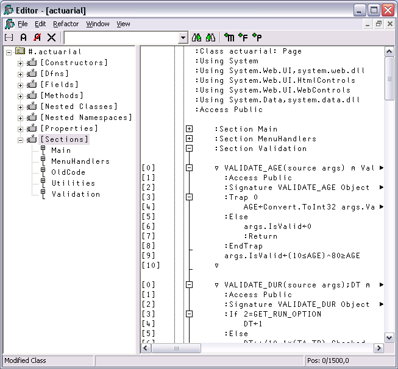
Find and Replace Dialogs
The Find and Find/Replace dialog boxes are used to locate and modify text in an Edit window.
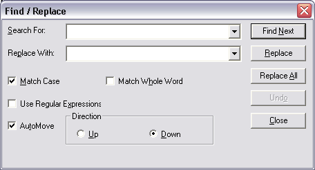
| Search For | Enter the text string that you want to find. Note that the text from the last 10 searches is available from the drop-down list. If appropriate, the search text is copied from the Find Objects tool. This makes it easy to first search for functions containing a particular string, and then to locate the string in the functions. |
| Replace With | Enter the text string that you want to use as a replacement. Note that the text from the last 10 replacements is available from the drop-down list. |
| Match Case | Check this box if you want the search to be case-sensitive. |
| Match Whole Word | Check this box if you want the search to only match whole words. |
| Use Regular Expressions | Check this box if you want to use various wild card symbols. |
| AutoMove | If checked, the Find or Find/Replace dialog box will automatically position itself so as not to obscure a matched search string in the edit window. |
| Direction | Select Up or Down to control the direction of search. |
Using Find and Replace
Find and Replace work on the concept of a current search string and a current replace string which are entered using the Find and Find/Replace Dialog boxes. These boxes also contain buttons for performing search/replace operations.
Suppose that you want to search through a function for references to the string "Adam". It is probably best to work from the start of the function, so first position the cursor there (by pressing Ctrl+Home). Then select Find from the Edit menu. The Find Dialog box will appear on your screen with the input cursor positioned in the edit box awaiting your input. Type "Adam" and click the Find Next button (or press Return), and the cursor will locate the first occurrence. Clicking Find Next again will locate the second occurrence. You can change the direction of the search by selecting Up instead of Down. You could search another function for "Adam" by opening a new Edit window for it and clicking Find Next. You do not have to redefine the search string.
Now let us suppose that you wish to replace all occurrences of "Adam" with "Amanda". First select Replace from the Edit menu. This will cause the Find Dialog box to be replaced by the Find/Replace Dialog box. Enter the string "Amanda" into the box labelled Replace With, then click Replace All. All occurrences of "Adam" in the current Edit window are changed to "Amanda". To repeat the same global change in another function, simply open an edit window and click Replace All again. If instead you only want to change particular instances of "Adam" to "Amanda" you may use Find Next to locate the ones you want, and then Replace to make each individual alteration.
Saving and Quitting
To save the function and terminate the edit, press Esc (EP) or select Exit from the File menu. The new version of the function replaces the previous one (if any) and the edit window is destroyed.
Alternatively, you can select Fix from the File menu. This fixes the new version of the function in the workspace, but leaves the edit window open. Note that the history is also retained, so you can subsequently undo some changes and fix the function again.
To abandon the edit, press Shift+Esc (QT) or select Abort from the File menu. This destroys the edit window but does not fix the function. The previous version (if any) is unchanged.